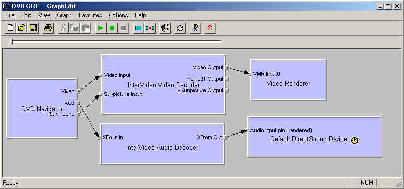

DirectShow関係
７．DVDの再生
DirectShowではDVDの再生もサポートしています。
おかげでDVDの仕組みなんて知らなくともVBでDVDの再生が楽に行えます。
（再生だけならね＾＾；。メニューや再生速度の操作とかはVBだけでは無理です）
ただし、DVDは大人の都合の塊なので動作に関しては環境に依存することを心しておいて下さい。
DirectShowはDVD再生をサポートしていますが、
残念ながらDVDのコーディックデコーダは付属してません。
（ライセンスやら独禁法やら規格の広さやらの大人の都合があるんでしょう。）
というわけでDVDのデコーダをインストールしなければなりません。
これは適当なDVD再生ソフトをインストールすれば大抵OKです。
私はInterVideo社の「WinDVD4」というのを入れてます。（CD-Rドライブについてたやつです）
WindowsMediaPlayer等でDVDが再生できるようなっていれば大丈夫です。
DVD再生ソフトをインストールするんだったら、そっちで見た方がいいんじゃないかって？
そんなの当たり前です。（笑
でも少しでも自分でやるって所にロマンを感じましょうよ（＾＾；
DVDを再生するためのグラフは下記のようになります。

「DVD Navigator」というフィルタがソースフィルタになり、
「Video」と「SubPicture」がビデオデコーダ経由でビデオレンダラに、
「AC3」がオーディオデコーダ経由でオーディオレンダラにつながります。
ちなみに「SubPicture」とは字幕のことです。
ビデオデコーダとオーディオデコーダはよく見てもらうとわかるのですが、
InterVideo社のものです。ここはインストールしたDVD再生ソフトによって変わってくるでしょう。（他はしらん）
とりあえず上のグラフを生成して実行すればDVDが再生されます。
（ただし、メニューとかの操作はできませんので、映像特典とかは見れないかも・・・）
上記のグラフを作成するコードは以下になります。
Option Explicit
'グラフマネージャ
Private mGrp As QuartzTypeLib.FilgraphManager
'フォームロード時
Private Sub Form_Load()
'グラフの作成
Set mGrp = New QuartzTypeLib.FilgraphManager
'DVD Navigatorフィルタをグラフに追加
Dim dvdnavi As QuartzTypeLib.IFilterInfo
Set dvdnavi = AddFilter(mGrp, "DVD Navigator")
'DVD Navigatorフィルタの各ピンを接続する
Dim pp As QuartzTypeLib.IPinInfo
For Each pp In dvdnavi.Pins
pp.Render
Next
'ビデオサイズ(縦横)を取得
Dim bv As QuartzTypeLib.IBasicVideo
Dim vx&, vy&
Set bv = mGrp
bv.GetVideoSize vx, vy
'ビデオサイズに合わせてウィンドウを調整
Dim winx&, winy& 'ウィンドウの縁サイズ
Me.ScaleMode = vbTwips
winx = Me.Width - Me.ScaleWidth
winy = Me.Height - Me.ScaleHeight
Me.Width = winx + vx * Screen.TwipsPerPixelX
Me.Height = winy + vy * Screen.TwipsPerPixelY
'ウィンドウ内で動画を再生させる
Dim vw As QuartzTypeLib.IVideoWindow
Set vw = mGrp
vw.WindowStyle = &H40000000 'WS_CHILD
vw.SetWindowPosition 0, 0, vx, vy
vw.Owner = Me.hWnd
'再生
mGrp.Run
End Sub
'レジストリに登録されているフィルタをグラフに追加する
Public Function AddFilter(ByRef Grp As QuartzTypeLib.FilgraphManager, ByVal FilterName$) As IFilterInfo
Dim regflt As QuartzTypeLib.IRegFilterInfo
For Each regflt In Grp.RegFilterCollection
If regflt.Name = FilterName$ Then
regflt.Filter AddFilter
Exit Function
End If
Next
End Function
|
（他のサンプル同様に「ActiveMovie control type library」を参照設定してください。）
実行させるといきなりDVDを再生します。（実行する前にディスクを入れといてください）
順に説明します。
Option Explicit
'グラフマネージャ
Private mGrp As QuartzTypeLib.FilgraphManager
'フォームロード時
Private Sub Form_Load()
'グラフの作成
Set mGrp = New QuartzTypeLib.FilgraphManager
|
グラフマネージャオブジェクトの定義とグラフの作成を行います。
この辺は「１．動画の再生」と同じですので、そちらを参照してください。
'DVD Navigatorフィルタをグラフに追加
Dim dvdnavi As QuartzTypeLib.IFilterInfo
Set dvdnavi = AddFilter(mGrp, "DVD Navigator")
|
グラフに「DVD Navigator」フィルタを追加します。
DVD Navigatorフィルタは大変高機能なフィルタで、DVDに関するほぼ全ての操作が出来るらしいです。
（すいません、全機能を試した訳ではないのです^^;）
このフィルタがDVD-ROMからDVDの規格にしたがってファイルを読み込み、
映像、音声、字幕情報に分割してくれます。（とっても楽ですね）
'DVD Navigatorフィルタの各ピンを接続する
Dim pp As QuartzTypeLib.IPinInfo
For Each pp In dvdnavi.Pins
pp.Render
Next
|
初めに示したグラフを見てもらうとわかりますが、
DVD Navigatorフィルタは３つの出力ピンがあります。
上のコードではDVD NavigatorフィルタのPinsコレクションで全てのピンを列挙し、
それぞれのピンの下流をRenderメソッドで作ります。
（どんなフィルタが使われるかはDirectShowに任せます。）
これだけでグラフの生成は終了です。
'ビデオサイズ(縦横)を取得
Dim bv As QuartzTypeLib.IBasicVideo
Dim vx&, vy&
Set bv = mGrp
bv.GetVideoSize vx, vy
'ビデオサイズに合わせてウィンドウを調整
Dim winx&, winy& 'ウィンドウの縁サイズ
Me.ScaleMode = vbTwips
winx = Me.Width - Me.ScaleWidth
winy = Me.Height - Me.ScaleHeight
Me.Width = winx + vx * Screen.TwipsPerPixelX
Me.Height = winy + vy * Screen.TwipsPerPixelY
'ウィンドウ内で動画を再生させる
Dim vw As QuartzTypeLib.IVideoWindow
Set vw = mGrp
vw.WindowStyle = &H40000000 'WS_CHILD
vw.SetWindowPosition 0, 0, vx, vy
vw.Owner = Me.hWnd
'再生
mGrp.Run
End Sub
'レジストリに登録されているフィルタをグラフに追加する
Public Function AddFilter(ByRef Grp As QuartzTypeLib.FilgraphManager, ByVal FilterName$) As IFilterInfo
Dim regflt As QuartzTypeLib.IRegFilterInfo
For Each regflt In Grp.RegFilterCollection
If regflt.Name = FilterName$ Then
regflt.Filter AddFilter
Exit Function
End If
Next
End Function
|
以降は「１．動画の再生」と同じ様に、
フォームのサイズを動画の再生サイズに合わせてフォームの中で動画を再生させる為のコードになります。
またAddFilter関数は「２．ライブ動画の再生」で使用したものと同じで
名前によってフィルタをグラフに追加する関数です。
以上でVBからDVDの再生が行えます。
手順としてはUSBカメラの画像を表示するより簡単ですね。
自前でDVDを再生できるんなら「３．キャプチャ」でやった方法を使って
DVDの内容を簡単にDivX形式などに変換して
保存できるのではないかと考える人もいると思います。
ところがそうは大人の都合が許しません。（笑
静止画のスナップもここで紹介している方法では無理です（＾＾；
なぜなのか知りたい方はGraphEditでグラフを作り
レンダラ入力ピンのプロパティで形式を見て考えて見てください。
上に戻る